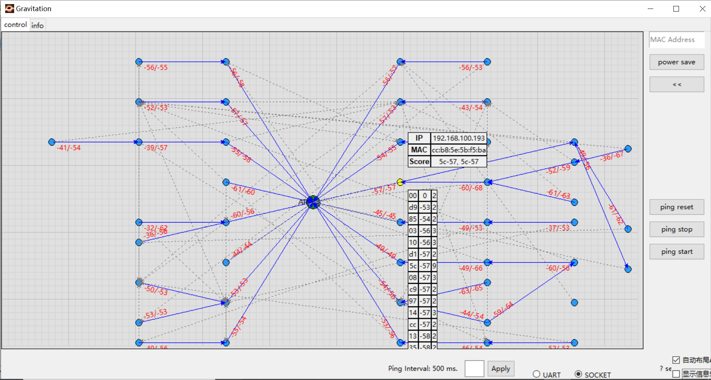

Wi-Fi R-Mesh 拓扑结构
如下图所示, Wi-Fi R-Mesh 是一个树形mesh网络, 用于增加Wi-Fi覆盖范围, 让距离AP比较远的设备也能获得稳定的网络连线。
{kind=link}
Wi-Fi R-Mesh 拓扑结构
Wi-Fi R-Mesh 的特点
Wi-Fi R-Mesh 具有以下突出优势:
应用层软件开发无感:
所有的mesh协议都在Wi-Fi驱动层实现，不管是根节点还是子节点，应用层都可以视为当前的节点是一个和AP连接的Wi-Fi Station。
Wi-Fi配网程序无需更新。
百微妙级别的快速配对和切换:
当检测到信号更好的父节点的时候，子节点可以快速的从旧的父节点切换到新的父节点，而不影响数据通信。
当父节点发生问题时（掉电或挂住），子节点可以迅速检测到并切换到另外一个父节点而不影响数据通信。
一个节点可以携带其所有的子节点一起切换到另外一个父节点，所有节点的数据通信不受影响。
经过数跳的设备也具备较高的吞吐量:
R-Mesh 转发无需经过TCP/IP协议栈， 数据转发都在底层驱动实现，可以节省 SRAM 和 MCU 算力。
软件处理时间极短，可以获得更好的吞吐量。
整个mesh网络具有很高的稳定性:
软件处理极其简单，也不需要算法维护路由表，所以整个网络会非常的稳定。
传统mesh网络的“环路”问题不会发生。
Wi-Fi R-Mesh 的数据流
Wi-Fi R-Mesh直接在Wi-Fi驱动层实现数据转发, 消耗极少的SRAM和MCU算力。
由于需要极少的软件处理过程，所以即使经过几跳的节点也会有很好的吞吐量。
{kind=link}
Wi-Fi R-Mesh 的数据流
Wi-Fi R-Mesh 的网络容量
Wi-Fi R-Mesh 中每个根节点下可以连接的子节点个数称为R-Mesh的网络容量。
如下图所示的例子中，网络容量为 4，则每个根节点只可以连接4个节点，不管拓扑的形式是哪一种。
拓扑 0: 所有子节点都直接连接到根节点。
拓扑 3: 4个节点形成一个4跳的线型网络
也可能是拓扑0和拓扑3之间的其它拓扑结构
Wi-Fi R-Mesh 网络容量
Wi-Fi R-Mesh NAT
由于R-Mesh的每个节点都会和AP创建真实的WIFI连线，在AP可以连接的Station数量受限的情况下，R-Mesh可以支持的节点个数也会受限。 基于此，我们可以使用Station + SoftAP基于NAT协议来扩展R-Mesh中节点的数量。此时，根节点及子节点会和SoftAP进行连线， 而不是和AP进行连线。NAT协议用于AP网络和R-Mesh网络之间的数据转发。
在R-Mesh中我们成这样的节点为R-NAT节点。
如下图所示，R-NAT节点放在根节点和AP之间，用于扩展可以接入网络的节点的数量。
{kind=link}
Wi-Fi R-NAT
Wi-Fi R-Mesh 的吞吐量
吞吐量
Wi-Fi R-Mesh 的吞吐量数据如下表所示：
Test scenario |
Layer |
UDP Tx (Mbps) |
UDP Rx (Mbps) |
TCP Tx (Mbps) |
TCP Rx (Mbps) |
|---|---|---|---|---|---|
Single Node |
Layer1 |
54.2 |
39.5 |
17.0 |
15.7 |
Layer2 |
19.6 |
18.8 |
9.6 |
10.0 |
|
Layer3 |
12.8 |
11.6 |
6.9 |
7.0 |
|
Layer4 |
9.4 |
8.2 |
5.4 |
5.2 |
|
Layer5 |
7.5 |
6.2 |
4.4 |
4.3 |
|
L1 + L2 |
Layer1 |
21.0 |
21.2 |
||
Layer2 |
12.5 |
14.0 |
|||
L1 + L2 + L3 |
Layer1 |
14.0 |
13.3 |
||
Layer2 |
7.0 |
7.2 |
|||
Layer3 |
5.1 |
6.4 |
|||
L1 + L2 + L3 + L4 |
Layer1 |
10.0 |
12.1 |
||
Layer2 |
4.0 |
8.4 |
|||
Layer3 |
3.6 |
6.7 |
|||
Layer4 |
3.0 |
4.0 |
|||
L1 + L2 + L3 + L4 + L5 |
Layer1 |
9.0 |
10.4 |
||
Layer2 |
3.2 |
3.7 |
|||
Layer3 |
2.5 |
2.9 |
|||
Layer4 |
2.3 |
1.8 |
|||
Layer5 |
1.8 |
2.1 |
通过Iperf测试吞吐量
与普通的Station或者AP模式无异，我们可以通过iperf测试R-Mesh的吞吐量。如下图所示，在AP端和节点端的PC上输入iperf指令即可。
{kind=link}
R-Mesh的吞吐量测试
UDP Tx 测试
节点端通过UART输入如下AT指令:
AT+IPERF=-c,<server IP>,-i,<periodic>,-u,-b,<bandwidth>,-t,<transtime>,-p,<port>
AP端通过Terminal输入如下iperf指令:
iperf -s -i <periodic> -u -p <port>
UDP Rx 测试
节点端通过UART输入如下AT指令:
AT+IPERF=-s,-i,<periodic>,-u,-p,<port>
AP端通过Terminal输入如下iperf指令:
iperf -c <R-mesh node IP> -i <periodic> -u -b <bandwidth> -t <transtime> -p <port>
TCP Tx 测试
节点端通过UART输入如下AT指令:
AT+IPERF=-c,<server IP>,-i,<periodic>,-t,<transtime>,-p,<port>
AP端通过Terminal输入如下iperf指令:
iperf -s -i <periodic> -p <port>
TCP Rx 测试
节点端通过UART输入如下AT指令:
AT+IPERF=-s,-i,<periodic>,-p,<port>
AP端通过Terminal输入如下iperf指令:
iperf -c <R-mesh node IP> -i <periodic> -t <transtime> -p <port>
Wi-Fi R-Mesh RTT
不同于BLE和Zigbee，R-Mesh的RTT（Round-Trip Latency）是非常低的，并且不会随着数据包的增大而明显增加。
{kind=link}
Wi-Fi R-Mesh 可视化演示工具-Gravitation
测试环境
AP和PC通过网络连接，Gravitation运行于PC上，如下图所示：
{kind=link}
Wi-Fi R-Mesh 测试环境
概述
Gravitation可以用于显示所有接入AP的R-Mesh节点极其拓扑结构，其主要特点如下：
及时显示网络拓扑及其改变。
可以做ping测试。
{kind=link}
Gravitation
每个节点会显示：MAC_Addr:IP (更新时间).
比如 CE:192.168.1.100(5:6) 代表MAC地址为XX:XX:XX:XX:0xCE, 其IP地址为 192.168.1.100。
Gravitation使用指南
测试工具的位置
Gravitation的目录为: {sdk}/tools/R-Mesh_Demo_Tool.
测试步骤
测试步骤如下：
将AP和PC通过网络连接，执行gravitation.exe
打开gravitation文件夹下的文件
config.yaml, 配置所要测试的AP。你可以同时添加多个AP：ap_mac_list: - 00:11:22:33:44:55
配置ping间隔以及ping包长度（不配置则使用默认参数）:
ping: interval: 500 packet_size: 64
其中ping间隔也可以通过gravitation界面直接配置。
此时gravitation配置完成，关闭gravitation并重新运行gravitation.exe，所有配置即刻生效。
使用AT指令让每个测试节点连接AP，之后节点会自动进行Mesh组网。你可以在gravitation观察到每个节点的连接状况及网络拓扑。
AT+WLCONN=ssid,rmesh_test,pw,12345678
gravitation默认采用自动布局的方式，默认情况下可以拖动AP，但是无法拖动R-Mesh节点，若需要手动拖动节点来自行布局，则需要将界面右下角的”自动布局“勾选去除。
gravitation默认采用自动显示信息的方式，每个节点的部分信息会自动显示在节点的右上角，可以通过取消勾选界面右下角的”显示信息“栏位，来取消信息的自动显示，此模式下，当点击某一个节点时，会在该节点的右上方显示完整MAC地址，IP地址，同时还会显示一个scan list记录了该节点所扫描到的的周围节点的MAC地址最后一个byte、信号强度等信息。
 手动显示信息
{kind=link}
Wi-Fi R-Mesh参数配置
您只需要配置有限的几个参数即可使用R-Mesh（不配置则会使用默认配置）。
打开文件``{sdk}/component/soc/amebadplus/ameba_wificfg.c``，可以看到如下参数，修改后重新编译SDK即可。
/*R-mesh*/
wifi_user_config.wtn_strong_rssi_thresh：RSSI高于这个阈值，则节点会作为root或者R-NAT直接连接AP。
wifi_user_config.wtn_father_refresh_timeout：单位为毫秒，超过这个时间如果节点没有收到父节点的beacon，则会切换父节点。
wifi_user_config.wtn_child_refresh_timeout：单位为毫秒，超过这个时间如果父节点没有收到子节点的beacon，则会删除这个子节点。
R-Mesh SDK获取及编译
获取SDK和R-Mesh WLAN lib：
索取R-Mesh WLAN lib：联系 <claire_wang@realsil.com.cn>
下载SDK：IoT SDK
替换文件和编译image：
替换
{sdk}/amebadplus_gcc_project/project_km4/asdk/lib/application路径下的:file:lib_wifi_inic_ap.a替换
{sdk}/amebadplus_gcc_project/project_km0/asdk/lib/application路径下的:file:lib_wifi_common.a，lib_wifi_fw.a`和:file:`lib_wifi_inic_np.a在
{sdk}/component/wifi/driver/include/autoconf_8721da.h中打开如下宏，然后编译image即可使用R-Mesh#define CONFIG_WIFI_TUNNEL #define CONFIG_WTN_SOCKET_APP